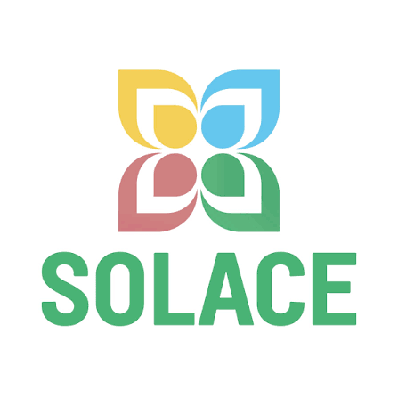
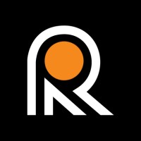
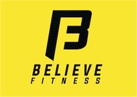
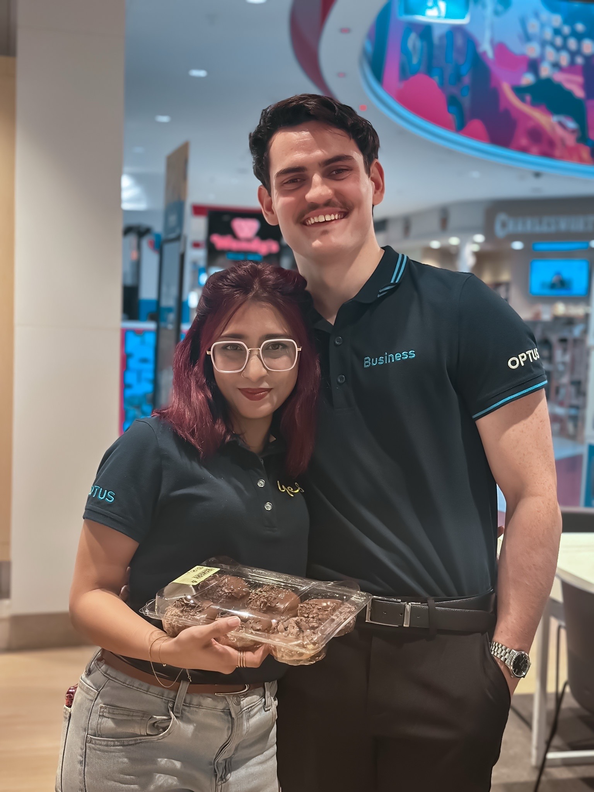

A showcase of technical audits, comprehensive SEO strategies, and CRM management across multiple industries.

& Web Layout
I utilized a blend of AI tools and deep personal research to formulate top-notch, highly relevant content. Alongside writing, I collaborated heavily with the web team to ensure perfect user sitemaps and breadcrumbs.
- Authored and edited almost 200 blog posts, optimizing meta tags, titles, and ensuring both internal/external linking fidelity.
- Spearheaded competitor research via SE Ranking, deeply analyzing domain trust and traffic origins.
- Major Success: One of my most renowned pieces of content generated significant traffic growth and engagement:
Read the Serenity Prayer Article ↗ - Created landing page layout blueprints in Canva, translating complex technical SEO requirements into simple, actionable English for stakeholders.
Alignment
Telunas Resorts needed to boost organic visibility within a highly competitive travel market. I handled the rigorous content writing and SEO structuring required to improve domain authority.
- Produced high-quality, research-backed content to target specific high-intent travel queries.
- Conducted deep structural research to tactfully place internal links that guided user journey and reduced bounce rate.
- Optimized all published content for both mobile and desktop responsiveness.

& Off-Page SEO
I was tasked with identifying deep-rooted technical bottlenecks preventing higher search indexation, alongside executing an aggressive off-page backlinking strategy.
- Ran extensive technical audits utilizing Screaming Frog, Google Analytics, and Google Search Console.
- Actively resolved crawl errors and ensured strong mobile and desktop responsiveness to keep site bounce rates low.
- Executed mass outreach for ~350 backlinks, utilizing highly targeted `[topic] + "guest blog"` prospecting methods to build domain authority.

Ads Launch
Believe Fitness needed a strong hyper-local physical presence for franchise locations to dominate regional searches and drive foot traffic.
- Took care of 13+ Google Business Profiles utilizing GBP Manager—updating pictures, adding comprehensive FAQs, and engaging with customer reviews.
- Leveraged BrightLocal to monitor localized SERP movements and competitor positioning.
- Launched and monitored targeted Google Ads to capture high-intent local fitness traffic.

Client Compliance
Operating in Australia's highly regulated telecom market required balancing aggressive sales targets with strict federal compliance, while delivering empathetic customer service.
- Managed high-volume sales, dynamic customer profiling, and issue resolution within the Jarvis CRM system, consistently meeting and exceeding KPIs.
- Ensured flawless adherence to the Spam Act, Document Verification Service (DVS), Telemarketing standards, and IATA Freight Legislation Requirements.
- Demonstrated exceptional communication skills serving a diverse mix of international and local Australian demographics, seamlessly identifying needs and preventing mis-selling.
- My dedication to incredible service cultivated strong rapport, regularly resulting in customer appreciation gifts.
